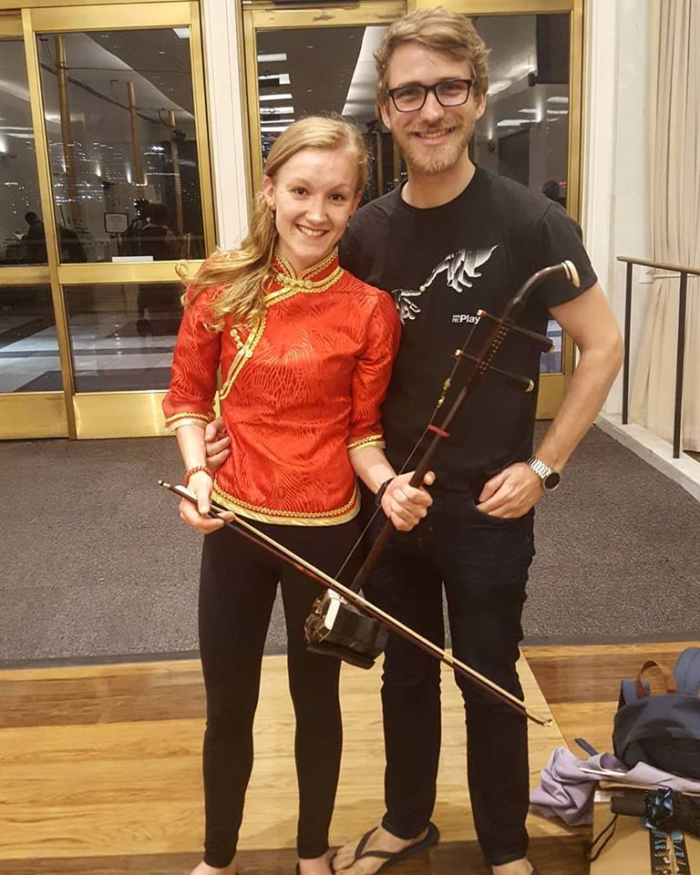

Hi friends! I'm Naomi, your student program coordinator. My Chinese name is 奥米. I'm making this website so we can get to know each other a bit and for you to see what we have planned! Please reach out to me with any questions you have - in either English or Chinese!

I'm a current graduate student at Johns Hopkins University studying international economics and China studies. I have lived in China for three years. From 2016-2017, I worked at the American Chamber of Commerce in Shanghai while completing the first year of my Master's degree at the Hopkins-Nanjing Center. From 2015-2016, I taught English in Foshan, and I studied abroad as a student at Fudan University in 2015. In 2015 I began studying Chinese, and I also began learning to play the erhu, the instrument that I am still the most passionate about! I hope you feel free to reach out to me with any questions you might have, or just to say hello! I'm so excited to meet you all! :)
- Wechat ID: naomilucille
- Email: garcia@uschinastrong.org
- Phone: 443-422-1858